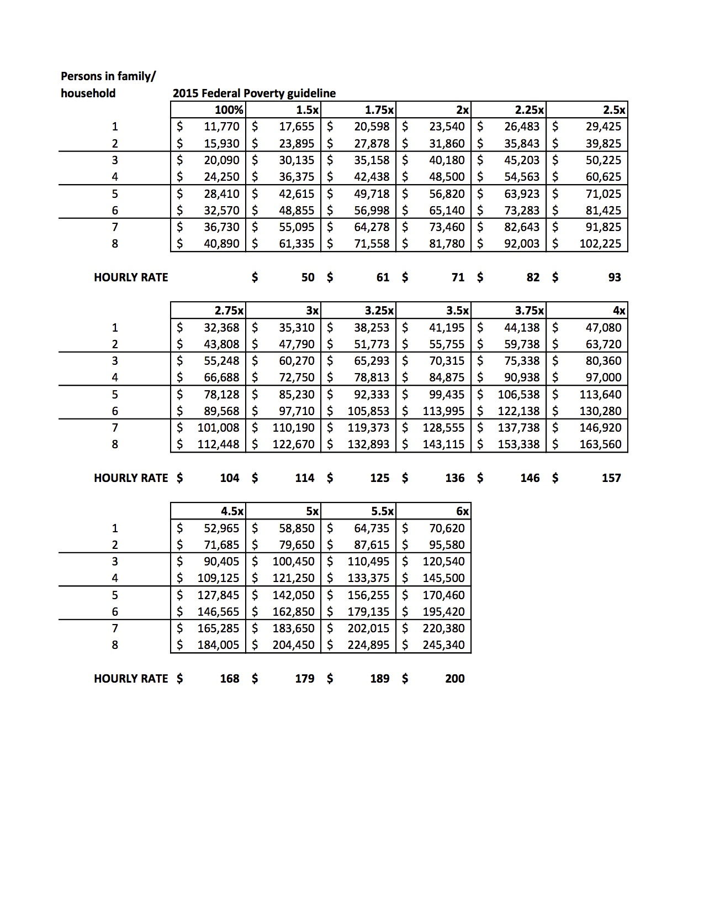

I'm building a website for a local non-profit organization. They offer legal services on a sliding rate scale, dependent on the client's household size and income. They asked to include a table which dispalys the various rates according to the client's income and household size. The information is all there, but it's not very user-friendly in this form.
My goal with this project was to build a better way for users to get their customized rate information. Instead of a static table, I wanted to create a responsive interface where users could enter their income and household size and be shown the corresponding rate without scanning over numbers that don't apply to them.
Before crafting a user interface, I needed to get my javascript to work. I started with a very bare-bones sytem - a drop-down input for household size and a text input field for annual income. It didn't look pretty, but it worked!
I considered using math to calculate the rate for the given inputs, but the organization doesn't use an exact formula (they round here and there), so exact math results wouldn't match their table. Instead I hard-coded the income levels in nested if/then statements like so:
if ( household == 1 ) {
if ( income >= 11770 && income < 17655 ) {
var incomeLevel = 1;
};
if ( income >= 17655 && income < 20598 ) {
var incomeLevel = 1.5;
};
if ( income >= 20598 && income < 23540 ) {
var incomeLevel = 1.75;
};
etc.
Entering this data was rather tedious (over 400 lines of code!), and not the best long-term solution since the table will need to be updated annually, but it works for now. To keep this data out of the way while I wrote out the functions, I saved off a separate js file and linked to both.
The var incomeLevel corresponds to the percentage of the federal povery level, so I set this percentage to match an hourly rate like this:
function figureRate( incomeLevel ) {
So, an annual income at 100% of the federal poverty level would qualify for an hourly rate of $0.
if ( incomeLevel == 1 ) {
var yourRate = 0;
};
To clean up the displayed results, I borrowed a regex from StackOverflow to insert commas into the income:
var commaNum = $('output#income').val();
var updateNum = ( formatNumber ( commaNum ) );
function formatNumber ( num ) {
return num.toString().replace(/(\d)(?=(\d{3})+(?!\d))/g, "$1,")
}
As a finishing touch, to make my page align with the table data, I added an if/then statement to display the household number of 8 as "8 or more". I did this by adding class orMore to that element:
if ( householdNum == 8 ) {
...and then using a CSS pseudo class to append the text:
$('output#household').addClass( 'orMore' );
}
else {
$('output#household').removeClass( 'orMore' );
}
.orMore:after {
content:" or more";
}
I really wanted the rate info returned without the user having to click a button. I figured a range slider would be the best option for this, but I had a hard time getting the native HTML 5 slider to respond in the way I wanted. Some googling brought me to a jquery plugin called rangeslider. I ended up tweaking the plugin quite a bit, to the point where it may have taken just as long to write the code myself and apply it to the native HTML rangeslider, but I had already gone down the plugin route, so I stuck with that method.
Another challenege arose because each household number has a unique minimum and maximum income level. Using conditional statments, I set the income slider to update its min and max whenever the user changes the household number. Like this:
var setHousehold = $( '#household' ).val();
The id #income displays the income as a number (the minimum of each range), while #incomeRange refers to the slider input element.
if ( setHousehold >= 1 && setHousehold < 2 ){
$( '#income' ).val('11770');
$( '#incomeRange' ).attr( { 'min':11770, 'max':70620 } );
};
This change affected the UI, becuase now it needed to be clearer that the user should set their houshold size BEFORE setting their income, otherwise the income limits might not make sense.
I'm proud of the results. I acheived my goal of only providing the user with useful numbers.
Eventually, I'd like to explore using math to reach the income levels. This way, as the poverty level changes each year, the only tweak to the code is to reset this level and let the js take care of calculating the minimums and maximums.
To get super-fancy, I could add an input to handle this number (the federal poverty level) so that the organization can make this update on their own without needing to crack open code.
I'm especially happy to have created a tool which will soon be put to use in the real world. Once it's tested and approved by the organization, I'll post it live for the world to see.